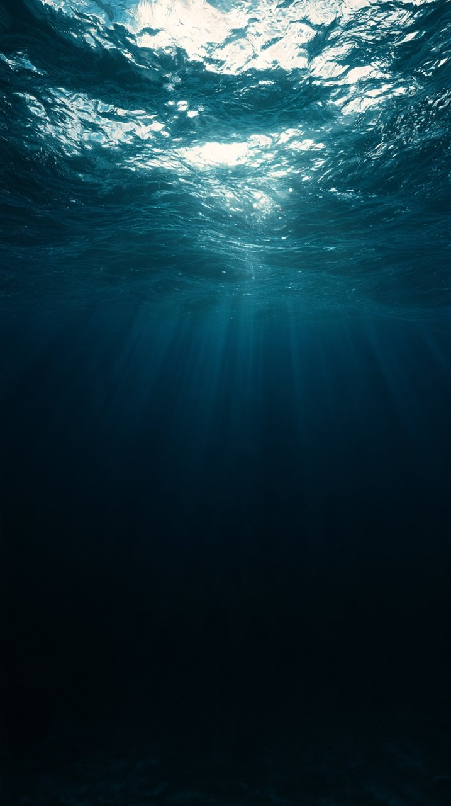

PROPOSE / 제안어디를
어디를
지켜야 할까요?
협약 당사국이 과학적 근거를 바탕으로 보호할 해역과 관리 방안을 제안합니다.
GREENPEACE · 2025 · UNOFFICIAL
바다를 지키는 약속 속으로.
사진을 선택해 이야기를 시작하세요.

02 / THE UNSEEN국경 밖의01 / INTO THE BLUE
하지만 모든 바다가
보호받는 것은 아닙니다.
02 / THE UNSEEN OCEAN
어느 한 국가의 관할권도 미치지 않는 해역.
이 넓은 바다를 지키려면 함께 움직여야 합니다.
면적 기준 · 그린피스 국제본부 보고서의 61%를 반올림.
공해 약 60% · 국가 관할 해역 약 40%
면적 비중을 나타낸 개념도이며 실제 지도는 아닙니다.
03 / FROM PROMISE TO PROTECTION
유엔 공해협약(BBNJ)은 국가들이 공해에 해양보호구역을 만들 수 있는 절차를 마련했습니다. 조약 발효가 곧 보호구역 자동 지정을 뜻하지는 않습니다.
협약 당사국이 과학적 근거를 바탕으로 보호할 해역과 관리 방안을 제안합니다.
과학기술기구가 제안서를 검토하고, 사무국은 관련 국가와 원주민, 지역 공동체 등의 의견을 모읍니다.
당사국총회가 보호구역 지정과 관련 조치를 결정할 수 있습니다. 시행 후에는 효과를 점검합니다.
절차를 요약한 설명 · 유엔 공해협약 · 협약문 제19~26조
04 / A HORIZON CALLED 2030
2030년 목표 · 현재 달성률이 아닙니다국제사회가 세운 효과적 보전·관리 목표.
생물다양성이 풍부한 곳을 지키고, 보호되는 해역이 서로 이어지도록 관리하는 일입니다.
분모: 전 세계 해양과 연안 · 글로벌 생물다양성 프레임워크 목표 3
100칸 중 30칸 · 목표의 크기를 나타낸 개념도

05 / THE JOURNEY CONTINUES
조약이 발효됐다고 바다가 저절로 보호되는 것은 아닙니다. 세계의 약속이 실제 해양보호로 이어질 수 있도록, 우리의 관심은 계속되어야 합니다.